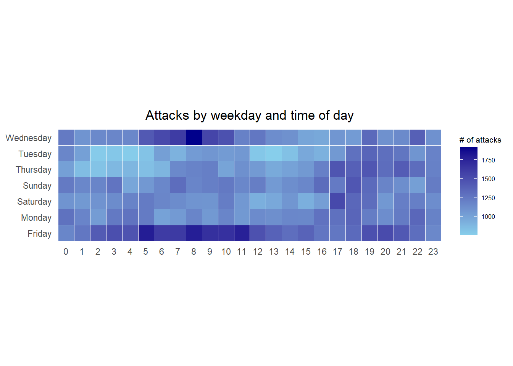
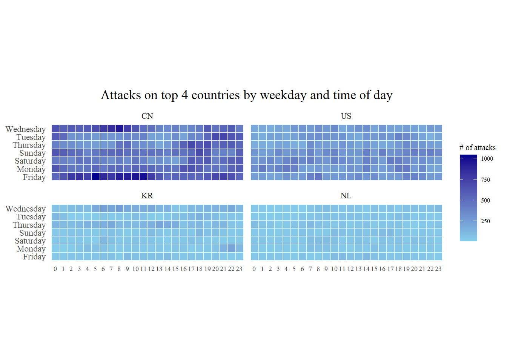
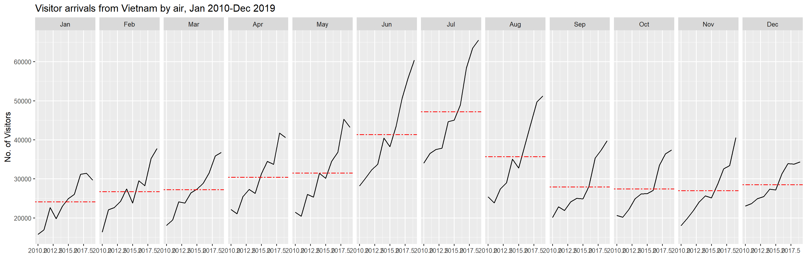
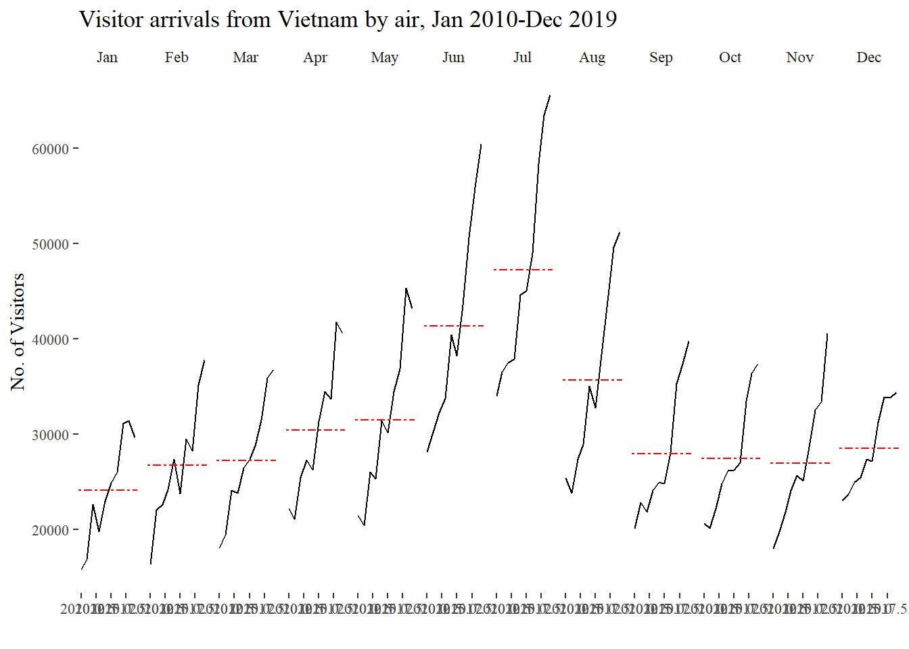

1. Learning Outcome
By the end of this hands-on exercise you will be able create the followings data visualisation by using R packages:
- plotting a calender heatmap by using ggplot2 functions,
- plotting a cycle plot by using ggplot2 function,
- plotting a slopegraph
- plotting a horizon chart
2. Data For this Exercise
Load data for the exercise and examining the data structure
Rows: 199999 Columns: 3
── Column specification ────────────────────────────────────────────────────────
Delimiter: ","
chr (2): source_country, tz
dttm (1): timestamp
ℹ Use `spec()` to retrieve the full column specification for this data.
ℹ Specify the column types or set `show_col_types = FALSE` to quiet this message.| timestamp | source_country | tz |
|---|---|---|
| 2015-03-12 15:59:16 | CN | Asia/Shanghai |
| 2015-03-12 16:00:48 | FR | Europe/Paris |
| 2015-03-12 16:02:26 | CN | Asia/Shanghai |
| 2015-03-12 16:02:38 | US | America/Chicago |
| 2015-03-12 16:03:22 | CN | Asia/Shanghai |
| 2015-03-12 16:03:45 | CN | Asia/Shanghai |
There are three columns, namely timestamp, source_country and tz.
- timestamp field stores date-time values in POSIXct format.
- source_country field stores the source of the attack. It is in ISO 3166-1 alpha-2 country code.
- tz field stores time zone of the source IP address.
3. Plotting Calendar Heatmap
3.1 Processing data before making heatmap
In order to plot heatmap, we need to process for the useful data.
Before we can plot the calender heatmap, two new fields namely wkday and hour need to be derived. In this step, we will write a function to perform the task.
Step 1: Define a function: for deriving weekday and hour from timestamps
ymd_hms()andhour()are fromlubridatepackageweekdays()is a base R function.
Step 2: Apply function to the data and change the data type
#apply function to derive wkday and hour from timestamp
processed_attacks <- attacks %>%
do(make_hr_wkday(.$timestamp, .$source_country, .$tz))
# Change the Chinese weekday name(default came out in my computer) to English weekday name
chinese_weekdays <- c("星期一", "星期二", "星期三", "星期四", "星期五", "星期六", "星期日")
english_weekdays <- c("Monday", "Tuesday", "Wednesday", "Thursday", "Friday", "Saturday", "Sunday")
english_wkday <- english_weekdays[match(processed_attacks$wkday, chinese_weekdays)]
processed_attacks$wkday <- english_wkday
#Change the data type of wkday and hour to "fac" (and also with adding "tz" to processed_attacks and sorting by tz)
processed_attacks <- bind_cols(tz = attacks$tz, processed_attacks) %>%
mutate(wkday = factor(wkday),
hour = factor(hour)) %>%
arrange(tz)
# rename processed_attacks with attacks
assign("attacks", processed_attacks)
#Check the data frame
kable(head(attacks))| tz | source_country | wkday | hour |
|---|---|---|---|
| Africa/Cairo | BG | Saturday | 20 |
| Africa/Cairo | TW | Sunday | 6 |
| Africa/Cairo | TW | Sunday | 8 |
| Africa/Cairo | CN | Sunday | 11 |
| Africa/Cairo | US | Sunday | 15 |
| Africa/Cairo | CA | Monday | 11 |
Beside extracting the necessary data into attacks data frame, mutate() of dplyr package is used to convert wkday and hour fields into factor so they’ll be ordered when plotting.
3.2 Making heatmap
The below heatmap chart is made by ggplot2 package: geom_tile()
#Code for making heatmap
grouped <- attacks %>%
count(wkday, hour) %>%
ungroup() %>%
na.omit() #delete columns which has "NA"
ggplot(grouped,
aes(hour,
wkday,
fill = n)) +
geom_tile(color = "white", #this is for making heatmap
size = 0.1) +
theme_tufte(base_family = "Calibri") +
coord_equal() +
scale_fill_gradient(name = "# of attacks",
low = "sky blue",
high = "dark blue") +
labs(x = NULL, #"Hour in Day"
y = NULL, #"Weekday"
title = "Attacks by weekday and time of day") +
theme(axis.ticks = element_blank(),
plot.title = element_text(hjust = 0.5),
legend.title = element_text(size = 8),
legend.text = element_text(size = 6)
)
Things to learn from the code chunk
- a tibble data table called grouped is derived by aggregating the attack by wkday and hour fields.
- a new field called n is derived by using group_by() and count() functions.
- na.omit() is used to exclude missing value.
- geom_tile() is used to plot tiles (grids) at each x and y position. color and size arguments are used to specify the border color and line size of the tiles.
- theme_tufte() of ggthemes package is used to remove unnecessary chart junk. To learn which visual components of default ggplot2 have been excluded, you are encouraged to comment out this line to examine the default plot.
- coord_equal() is used to ensure the plot will have an aspect ratio of 1:1.
- scale_fill_gradient() function is used to creates a two colour gradient (low-high).
Then we can simply group the count by hour and wkday and plot it, since we know that we have values for every combination there’s no need to further preprocess the data.
3.3 Building Multiple Heatmaps
Challenge: Building multiple heatmaps for the top four countries with the highest number of attacks.
Step 1: Deriving attack by country
In order to identify the top 4 countries with the highest number of attacks, you are required to do the followings:
- count the number of attacks by country,
- calculate the percent of attacks by country, and
- save the results in a tibble data frame.
Step 2: Preparing the tidy data frame
In this step, you are required to extract the attack records of the top 4 countries from attacks data frame and save the data in a new tibble data frame (i.e. top4_attacks).
Step 3: Plotting the Multiple Calender Heatmap by using ggplot2 package.
ggplot(top4_attacks,
aes(hour,
wkday,
fill = n)) +
geom_tile(color = "white",
size = 0.1) +
theme_tufte() +
coord_equal() +
scale_fill_gradient(name = "# of attacks",
low = "sky blue",
high = "dark blue") +
facet_wrap(~source_country, ncol = 2) +
labs(x = NULL, y = NULL,
title = "Attacks on top 4 countries by weekday and time of day") +
theme(axis.ticks = element_blank(),
axis.text.x = element_text(size = 7),
plot.title = element_text(hjust = 0.5),
legend.title = element_text(size = 8),
legend.text = element_text(size = 6) )
4. Plotting Cycle Plot
In this section, you will learn how to plot a cycle plot showing the time-series patterns and trend of visitor arrivals from Vietnam programmatically by using ggplot2 functions.

Step 1: Data Import
Step 2: Deriving month and year fields
Step 3: Extracting the target country
Step 4: Computing year average arrivals by month
Step 5: Plotting the cycle plot
Vietnam_visitors_plot <- ggplot() +
geom_line(data=Vietnam,
aes(x=year,
y=`Vietnam`,
group=month),
colour="black") +
geom_hline(aes(yintercept=avgvalue),
data=hline.data,
linetype=6,
colour="red",
size=0.5) +
facet_grid(~month) +
labs(axis.text.x = element_blank(),
title = "Visitor arrivals from Vietnam by air, Jan 2010-Dec 2019") +
xlab("") +
ylab("No. of Visitors") +
theme_tufte()
Vietnam_visitors_plot
5. Plotting Slopegraph
In this section you will learn how to plot a slopegraph by using R. Before getting start, make sure that CGPfunctions has been installed and loaded onto R environment. Then, refer to Using newggslopegraph to learn more about the function. Lastly, read more about newggslopegraph() and its arguments by referring to this link.
Step 1: Data Import
Rows: 550 Columns: 4
── Column specification ────────────────────────────────────────────────────────
Delimiter: ","
chr (1): Country
dbl (3): Year, Yield, Production
ℹ Use `spec()` to retrieve the full column specification for this data.
ℹ Specify the column types or set `show_col_types = FALSE` to quiet this message.Step 2: Plotting the slopegraph
rice %>%
mutate(Year = factor(Year)) %>%
filter(Year %in% c(1961, 1980)) %>%
newggslopegraph(Year, Yield, Country,
Title = "Rice Yield of Top 11 Asian Counties",
SubTitle = "1961-1980",
Caption = "Prepared by: Dr. Kam Tin Seong")
Converting 'Year' to an ordered factor
Things to learn from the code chunk
For effective data visualisation design, factor() is used convert the value type of Year field from numeric to factor.